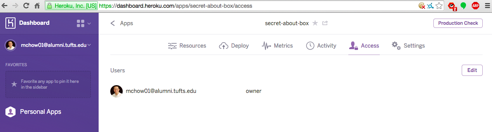

Objectives
- Develop a server-side web application using Heroku, Node.js, and the Express web framework.
- Enable and use Cross-Origin Resource Sharing (CORS).
- Read and write data to a MongoDB database.
- Build JSON-based APIs.
Overview
In Assignment 2, you sent your login, latitude, and longitude to a web application server (i.e., http://secret-about-box.herokuapp.com/), and it responded with a gob of data, where others in the class are in JSON format. In this assignment, you will write a web application that is almost exactly like that used for Assignment 2, and deploy it to server(s).
Using Heroku, Node.js with the Express web framework, and MongoDB, you are to build a web application that maintains "location check-ins" (login, latitude, and longitude) for a long period of time.
Data Description
Your web application shall only work with one set of data: locations. In MongoDB, a set of data is known as a collection. If you are familiar with relational databases, a collection is analogous to a "table". The collection contains a number of records, properly known as documents. If you are familiar with relational databases, a document is analogous to a "row". The data that must be stored in one document (or record) are:
login(a string) - A user's handlelat(a floating point number) - The user's latitudelng(a floating point number) - The user's longitudecreated_at- The timestamp, generated for each new record entry. Use the JavaScriptDateobject to generate timestamp.
Each document will have the data field _id (the document's unique field, primary key) created automatically.
Requirements
Your web application shall have the following features:
1. A POST /sendLocation API
Submits check-in from any domain. The mandatory fields and exact field names for submission to this API are login, lat, and lng. Successful submission of these three pieces of data shall result in one entry into the collection locations in Mongo. If a submission is missing any one of the data fields, do not insert new record into the database and send the following JSON as the response: {"error":"Whoops, something is wrong with your data!"}. Cross-origin resource sharing must be enabled for this API, else data cannot be sent from another domain. Upon successful insertion of record into database, return a JSON string that is an array of objects.
Example JSON response (same as the one seen in the Assignment 2 specification: [{"_id":"54e95ff46cca2a030048cf14","login":"mchow","lat":40.67693,"lng":117.23193,"created_at":"2015-02-22T05:12:24.596Z"},{"_id":"54e9619bfd68b4030062ddc2","login":"carmensandiego","lat":-22.951944,"lng":-43.210556,"created_at":"2015-02-22T04:56:59.495Z"},{"_id":"54e96122fd96990300d54521","login":"nrnrnr","lat":42.090944,"lng":-71.264344,"created_at":"2015-02-22T04:54:58.589Z"},{"_id":"54e960e5fd96990300d54520","login":"kaytea","lat":41.903056,"lng":12.454444,"created_at":"2015-02-22T04:53:57.214Z"}]
You must prevent duplicate records for a login from being stored. That is, if a login (e.g., "mchow") makes a number of successful POST requests, only the last entry is recorded (i.e., the last latitude, longitude, and timestamp). The old entry shall be overwritten. Failure to prevent duplicate records from being stored will result in a deduction of 4 points (out of 30)
Finally, you are not allowed to use loops (e.g., for or while) to do this feature, API.
2. A GET /location.json API
Returns a JSON string, one object, of the last known location for a specified login. The mandatory parameter for this API is login. If login is empty or no results found, return empty JSON object {}. Example: /location.json?login=kaytea returns {"_id":"54e960e5fd96990300d54520","login":"kaytea","lat":41.903056,"lng":12.454444,"created_at":"2015-02-22T04:53:57.214Z"}
Cross-origin resource sharing must be enabled for this API else another another domain cannot retrieve data.
3. / - Home, the root, the index in HTML.
You may also use additional JavaScript and CSS, and you are free to design this page however you desire. Accessing this on a web browser shall display list of the check-ins for all logins sorted in descending order by timestamp --the last person who checked-in is displayed first. Login and check-in timestamp must be displayed in addition to the location (latitude and longitude). Simply outputting JSON as the page is unacceptable. Example output: kaytea checked in at 41.903056, 12.454444 on 2015-02-22T04:53:57.214Z
Security
Please note that I did not mention a thing about security or error handling in the requirements. Authentication to this web application is not required. There is a reason for this, as you will see in Assignment 4.
On Getting Started
- For this assignment, you will not be using your private GitHub repository!
- If you are on a Windows machine, you will need to use the virtual machine I created for this assignment as it contains MongoDB and Node.js installed (although it will need to be updated via
sudo apt-get update ; sudo apt-get upgrade). - In order to use MongoDB in a web application on Heroku, you will need to verify your Heroku account via of a credit card. You will not be billed. The reason for this is to verify that you are a human, and not a spammer.
- You will need to use the MongoLab plugin add-on for your web application. See https://addons.heroku.com/mongolab. This will enable MongoDB in your web application. There is a 5 MB limit for data storage, more than enough for our needs. If you forget to add a MongoDB plugin for your web application, your web application will return errors.
References You Will Need
- The Express web framework API reference (offcial)
- The
nodemongoappexample I wrote - Node.js + Express + Cross-Domain Scripting (Stack Overflow)
- Getting Started with MongoDB Development (official)
- Lab 8
- Getting Started with Node.js on Heroku - Using MongoDB
- The Official MongoDB Node.JS Driver QUICK START
- The Official MongoDB Node.JS Driver Documentation
Testing Your Web Application
- Push and deploy your app to Heroku.
- Connect your Assignment 2 to your app instead of
http://secret-about-box.herokuapp.com/.... f your Assignment 2 breaks, then there is something wrong with your Assignment 2.
The README File
Include a README file that describes the work. This description must:
- Identify what aspects of the work have been correctly implemented and what have not.
- Identify anyone with whom you have collaborated or discussed the assignment.
- Say approximately how many hours you have spent completing the assignment.
- Be written in either text format (thus
README.txt) or in Markdown (thusREADME.md). No other formats will be accepted.
Submitting the Assignment
- Push and deploy your app to Heroku.
- Complete the form at https://docs.google.com/forms/d/1pZE5GdfsWxNBqF0nChjFnOxpyLoM9D8fxEGJQVW0kC4/viewform. You only need to complete this form once!
- Add me as a collaborator (using my email address
mchow[AT]cs[DOT]tufts[DOT]edu) for your web application in Heroku. You can do this by logging on to Heroku, go to the dashboard for your web application, under "Access", click on the "Edit" button and enter my email address. .
Assessment
- (10 total points) The
POST /sendLocationAPI as specified above - (5 points) The
GET /location.jsonAPI as specified above - (5 points) The index
/as specified above - Please note that if I cannot access any of the APIs above, you will receive NO CREDIT.
- (5 points) The README